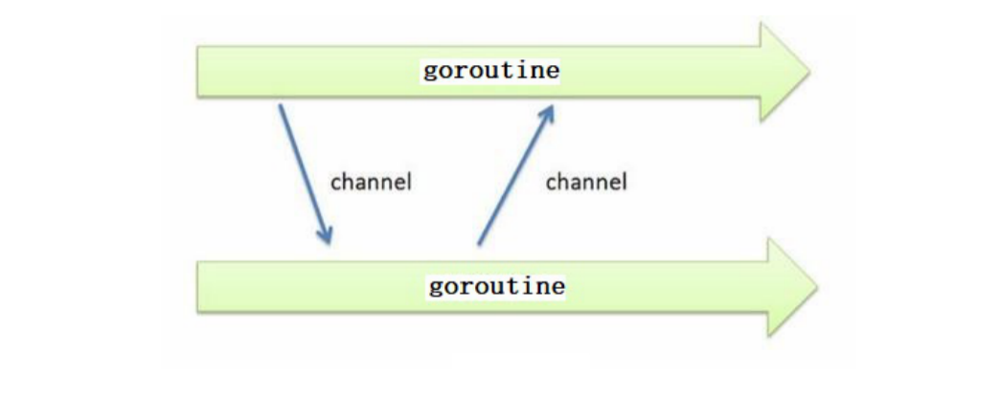
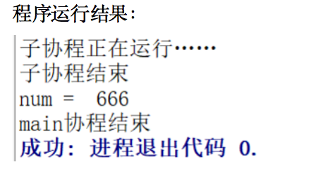
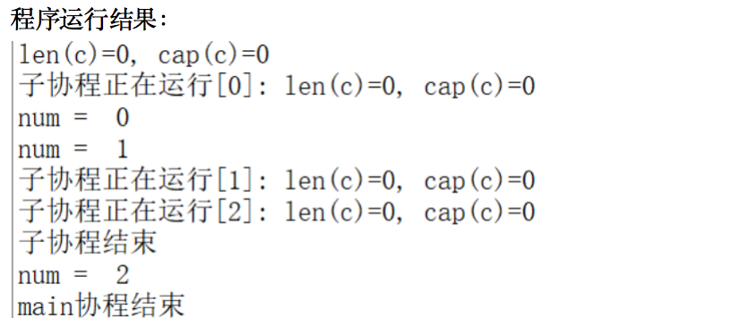

1. 概念
channel是Go语言中的一个核心类型，可以把它看成管道。并发核心单元通过它就可以发送或者接收数据进行通讯，这在一定程度上又进一步降低了编程的难度。
channel是一个数据类型，主要用来解决go程的同步问题以及协程之间数据共享（数据传递）的问题。
goroutine运行在相同的地址空间，因此访问共享内存必须做好同步。goroutine 奉行通过通信来共享内存，而不是共享内存来通信。
引⽤类型 channel可用于多个 goroutine 通讯。其内部实现了同步，确保并发安全。

2. 定义channel变量
- 和map类似，channel也一个对应make创建的底层数据结构的引用。
- 当我们复制一个channel或用于函数参数传递时，我们只是拷贝了一个channel引用，因此调用者和被调用者将引用同一个channel对象。和其它的引用类型一样，channel的零值也是nil。
- 定义一个channel时，也需要定义发送到channel的值的类型。channel可以使用内置的make()函数来创建：
- chan是创建channel所需使用的关键字。Type 代表指定channel收发数据的类型。
make(chan Type) //等价于make(chan Type, 0)
make(chan Type, capacity)
- 当我们复制一个channel或用于函数参数传递时，我们只是拷贝了一个channel引用，因此调用者和被调用者将引用同一个channel对象。和其它的引用类型一样，channel的零值也是nil。
- 当 参数capacity= 0 时，channel 是无缓冲阻塞读写的；当capacity > 0 时，channel 有缓冲、是非阻塞的，直到写满 capacity个元素才阻塞写入。
- channel非常像生活中的管道，一边可以存放东西，另一边可以取出东西。channel通过操作符 <- 来接收和发送数据，发送和接收数据语法：
channel <- value //发送value到channel
<-channel //接收并将其丢弃
x := <-channel //从channel中接收数据，并赋值给x
x, ok := <-channel //功能同上，同时检查通道是否已关闭或者是否为空
默认情况下，channel接收和发送数据都是阻塞的，除非另一端已经准备好，这样就使得goroutine同步变的更加的简单，而不需要显式的lock。
示例代码：
func main() {
c := make(chan int)
go func() {
defer fmt.Println("子协程结束")
fmt.Println("子协程正在运行……")
c <- 666 //666发送到c
}()
num := <-c //从c中接收数据，并赋值给num
fmt.Println("num = ", num)
fmt.Println("main协程结束")
}

3. 无缓冲的channel
无缓冲的通道（unbuffered channel）是指在接收前没有能力保存任何值的通道。
- 这种类型的通道要求发送goroutine和接收goroutine同时准备好，才能完成发送和接收操作。否则，通道会导致先执行发送或接收操作的 goroutine 阻塞等待。
- 这种对通道进行发送和接收的交互行为本身就是同步的。其中任意一个操作都无法离开另一个操作单独存在。
阻塞：由于某种原因数据没有到达，当前协程（线程）持续处于等待状态，直到条件满足，才解除阻塞。
同步：在两个或多个协程（线程）间，保持数据内容一致性的机制。

- 在第 1 步，两个 goroutine 都到达通道，但哪个都没有开始执行发送或者接收。
- 在第 2 步，左侧的 goroutine 将它的手伸进了通道，这模拟了向通道发送数据的行为。这时，这个 goroutine 会在通道中被锁住，直到交换完成。
- 在第 3 步，右侧的 goroutine 将它的手放入通道，这模拟了从通道里接收数据。这个 goroutine 一样也会在通道中被锁住，直到交换完成。
- 在第 4 步和第 5 步，进行交换，并最终，在第 6 步，两个 goroutine 都将它们的手从通道里拿出来，这模拟了被锁住的 goroutine 得到释放。两个 goroutine 现在都可以去做其他事情了。
无缓冲的channel创建格式：
make(chan Type) //等价于make(chan Type, 0)
如果没有指定缓冲区容量，那么该通道就是同步的，因此会阻塞到发送者准备好发送和接收者准备好接收。 示例代码：
func main() {
c := make(chan int, 0) //创建无缓冲的通道 c
//内置函数 len 返回未被读取的缓冲元素数量，cap 返回缓冲区大小
fmt.Printf("len(c)=%d, cap(c)=%d\n", len(c), cap(c))
go func() {
defer fmt.Println("子协程结束")
for i := 0; i < 3; i++ {
c <- i
fmt.Printf("子协程正在运行[%d]: len(c)=%d, cap(c)=%d\n", i, len(c), cap(c))
}
}()
time.Sleep(2 * time.Second) //延时2s
for i := 0; i < 3; i++ {
num := <-c //从c中接收数据，并赋值给num
fmt.Println("num = ", num)
}
fmt.Println("main协程结束")
}

4. 有缓冲的channel
有缓冲的通道（buffered channel）是一种在被接收前能存储一个或者多个数据值的通道。
- 这种类型的通道并不强制要求 goroutine 之间必须同时完成发送和接收。通道会阻塞发送和接收动作的条件也不同。
- 只有通道中没有要接收的值时，接收动作才会阻塞。
- 只有通道没有可用缓冲区容纳被发送的值时，发送动作才会阻塞。
这导致有缓冲的通道和无缓冲的通道之间的一个很大的不同：无缓冲的通道保证进行发送和接收的 goroutine 会在同一时间进行数据交换；有缓冲的通道没有这种保证。
示例图如下：

- 在第 1 步，右侧的 goroutine 正在从通道接收一个值。
- 在第 2 步，右侧的这个 goroutine独立完成了接收值的动作，而左侧的 goroutine 正在发送一个新值到通道里。
- 在第 3 步，左侧的goroutine 还在向通道发送新值，而右侧的 goroutine 正在从通道接收另外一个值。这个步骤里的两个操作既不是同步的，也不会互相阻塞。
- 最后，在第 4 步，所有的发送和接收都完成，而通道里还有几个值，也有一些空间可以存更多的值。
有缓冲的channel创建格式：
make(chan Type, capacity)
如果给定了一个缓冲区容量，通道就是异步的。只要缓冲区有未使用空间用于发送数据，或还包含可以接收的数据，那么其通信就会无阻塞地进行。
示例代码：
func main() {
c := make(chan int, 3) //带缓冲的通道
//内置函数 len 返回未被读取的缓冲元素数量， cap 返回缓冲区大小
fmt.Printf("len(c)=%d, cap(c)=%d\n", len(c), cap(c))
go func() {
defer fmt.Println("子协程结束")
for i := 0; i < 3; i++ {
c <- i
fmt.Printf("子协程正在运行[%d]: len(c)=%d, cap(c)=%d\n", i, len(c), cap(c))
}
}()
time.Sleep(2 * time.Second) //延时2s
for i := 0; i < 3; i++ {
num := <-c //从c中接收数据，并赋值给num
fmt.Println("num = ", num)
}
fmt.Println("main协程结束")
}

5. 关闭channel
如果发送者知道，没有更多的值需要发送到channel的话，那么让接收者也能及时知道没有多余的值可接收将是有用的，因为接收者可以停止不必要的接收等待。这可以通过内置的close函数来关闭channel实现。 示例代码：
func main() {
c := make(chan int)
go func() {
for i := 0; i < 5; i++ {
c <- i
}
//把 close(c) 注释掉，程序会一直阻塞在 if data, ok := <-c; ok 那一行
close(c)
}()
for {
//ok为true说明channel没有关闭，为false说明管道已经关闭
if data, ok := <-c; ok {
fmt.Println(data)
} else {
break
}
}
fmt.Println("Finished")
}
运行结果： 0 1 2 3 4 Finished
注意：
- channel不像文件一样需要经常去关闭，只有当你确实没有任何发送数据了，或者你想显式的结束range循环之类的，才去关闭channel；
- 关闭channel后，无法向channel 再发送数据(引发 panic 错误后导致接收立即返回零值)；
- 关闭channel后，可以继续从channel接收数据；
- 对于nil channel，无论收发都会被阻塞。
可以使用 range 来迭代不断操作channel：
func main() {
c := make(chan int)
go func() {
for i := 0; i < 5; i++ {
c <- i
}
//把 close(c) 注释掉，程序会一直阻塞在 for data := range c 那一行
close(c)
}()
for data := range c {
fmt.Println(data)
}
fmt.Println("Finished")
}
6. 单向channel及应用
- 默认情况下，通道channel是双向的，也就是，既可以往里面发送数据也可以同里面接收数据。
- 但是，我们经常见一个通道作为参数进行传递而值希望对方是单向使用的，要么只让它发送数据，要么只让它接收数据，这时候我们可以指定通道的方向。
单向channel变量的声明非常简单，如下：
var ch1 chan int // ch1是一个正常的channel，是双向的
var ch2 chan<- float64 // ch2是单向channel，只用于写float64数据
var ch3 <-chan int // ch3是单向channel，只用于读int数据
- chan<- 表示数据进入管道，要把数据写进管道，对于调用者就是输出。
- <-chan 表示数据从管道出来，对于调用者就是得到管道的数据，当然就是输入。
可以将 channel 隐式转换为单向队列，只收或只发，不能将单向 channel 转换为普通 channel：
c := make(chan int, 3)
var send chan<- int = c // send-only
var recv <-chan int = c // receive-only
send <- 1
//<-send //invalid operation: <-send (receive from send-only type chan<- int)
<-recv
//recv <- 2 //invalid operation: recv <- 2 (send to receive-only type <-chan int)
//不能将单向 channel 转换为普通 channel
d1 := (chan int)(send) //cannot convert send (type chan<- int) to type chan int
d2 := (chan int)(recv) //cannot convert recv (type <-chan int) to type chan int
示例代码：
// chan<- //只写
func counter(out chan<- int) {
defer close(out)
for i := 0; i < 5; i++ {
out <- i //如果对方不读 会阻塞
}
}
// <-chan //只读
func printer(in <-chan int) {
for num := range in {
fmt.Println(num)
}
}
func main() {
c := make(chan int) // chan //读写
go counter(c) //生产者
printer(c) //消费者
fmt.Println("done")
}